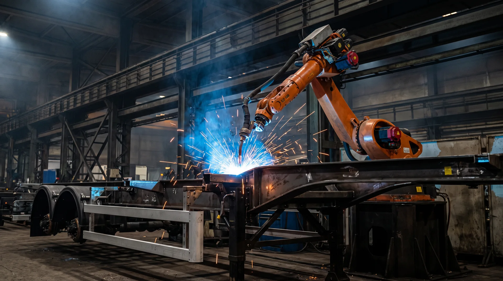

ZUBR TRAIL
SAT-500 / АЛЮМИНИЕВЫЙ ЗЕРНОВОЗ

SAT-500 — самосвальный полуприцеп с алюминиевым кузовом и задней разгрузкой. Создан для сельскохозяйственных и других сыпучих грузов.
Нужна техника, которая соответствует вашей логистике: условиям загрузки, площадке разгрузки и характеру груза. SAT-500 объединяет алюминиевый кузов с самосвальной схемой задней разгрузки.
Значение для ряда исполнений модельной линейки.
Максимальный объём относится не ко всем версиям.
Количество осей выбирается для конкретной конфигурации.
Материалы, схема разгрузки и шасси рассматриваются вместе с задачами перевозчика.
Нажмите на раздел и узнайте, как устроена логика SAT-500. Иллюстрации носят ознакомительный характер.

Алюминиевый кузов помогает управлять снаряжённой массой. Итоговые весовые параметры зависят от конкретного исполнения и комплектации.
Самосвальная схема задней разгрузки. При планировании перевозок учитывайте площадку выгрузки и требования к безопасной эксплуатации.
Трёх- и четырёхосные версии имеют разные параметры. Допустимые нагрузки, массу и оборудование необходимо уточнять под конкретную задачу.
Наглядно сравните значения объёма, встречающиеся в модельном ряду. Это не онлайн-конфигуратор и не подтверждение наличия комплектации.
43 м³ — ориентир для ряда исполнений SAT-500. Параметры зависят от согласованной комплектации.
Не громкие обещания, а конструктивные особенности, которые стоит оценить при подборе модели.
Материал конструкции — один из факторов, определяющих собственную массу полуприцепа.
Самосвальная схема подходит для многих задач перевозки зерновых и сыпучих материалов.
Трёх- и четырёхосные версии позволяют рассматривать конфигурацию с учётом маршрутов и грузов.
От сельскохозяйственных работ до промышленной логистики — обсудим исполнение под реальные условия ваших перевозок.
Материалы / Концептуальная визуализацияЗначения приведены как ориентиры из действующего описания модельного ряда. Они не относятся автоматически к любому исполнению. Массу, нагрузки, оборудование и габариты уточняйте при запросе предложения.
Полная карточка модели ↗
Производство / Иллюстративный материалОбсудим тип груза, необходимый объём кузова, условия разгрузки и конфигурацию. Подготовим запрос на консультацию или демонстрацию.